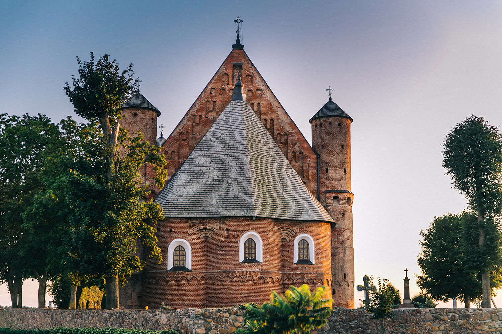
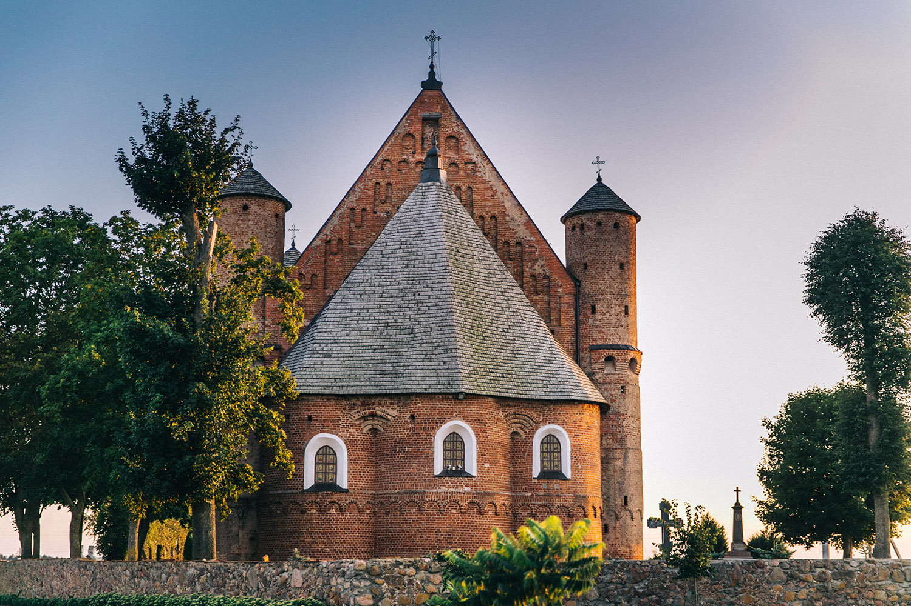

Natur
Natur
 Wirtschaft
Wirtschaft
 Menschen
Menschen
 Geschichte

Sehenswürdigkeiten
Geschichte

Sehenswürdigkeiten
 Kultur
Kultur
Pavel Suchoi gilt zu Recht als Star der belarussischen technischen Wissenschaft. Während seines Studiums an der Kaiserlichen Schule beschäftigte er sich mit der Entwicklung eines Flugzeugs und traf sich mit Piloten, deren Berichte über das Fliegen den jungen Konstrukteur grenzenlos inspirierten. Während des Großen Vaterländischen Krieges wurde unter seiner Leitung der gepanzerte Sturzkampfbomber Su-6 entwickelt. Er ist Autor von 50 originellen Flugzeugkonstruktionen, von denen mehr als 30 gebaut und getestet wurden. Außerdem arbeitete er an Entwicklungen im Bereich der Strahlflugzeuge.
Physiker, Nobelpreisträger (Titel verliehen im Jahr 2000). Zchores Alfjorow beschäftigte sich mit Forschung und Entwicklung, leitete verschiedene wissenschaftliche Einrichtungen und Gesellschaften. Er schrieb über 500 wissenschaftliche Arbeiten, drei Monographien und schuf 50 Erfindungen. Seine Entdeckungen werden in Ampeln, Mobiltelefonen, Autoscheinwerfern und Supermarktausrüstung verwendet.
Bekannter Mathematiker, Physiker, Chemiker, Pädagoge, Doktor der Philosophie in Mathematik und Wissenschaftsgeschichte, Akademiemitglied der Internationalen Akademie für Astronautik, Akademiemitglied und Vizepräsident der Internationalen Akademie der Wissenschaften Eurasiens, verdienstvoller Professor an der Universität Maryland, Goldmedaillengewinner der Deutschen Gesellschaft Hermann Oberth. Im Jahr 1956 entwickelte er eine Formel für Raketentreibstoff auf Basis von flüssigem Wasserstoff, die Mondflüge ermöglichte. Er war an der Entwicklung von Treibstoff für das Raumschiff „Apollo“, das Space Shuttle und andere beteiligt.
Mediziner, Übersetzer, Schriftsteller, Denker. Doktor der freien Künste. Doktor der Medizin (1512). Der erste Belarusse mit einem Doktortitel. Erster Buchdrucker des Großfürstentums Litauen. Im Jahr 1517 veröffentlichte er erstmals die Bibel in altbelarussischer Sprache für „gewöhnliche Menschen zur guten Belehrung“.
Teilnehmer der Befreiungsbewegung in Belarus, Nationalheld Chiles, weltbekannter Wissenschaftler und Mineraloge, langjähriger Rektor der Universität von Chile. Er hinterließ bedeutende Spuren in verschiedenen Bereichen des menschlichen Wissens: Mineralogie und Geologie, Physik, Chemie und Metallurgie, Geographie und Ethnographie, Botanik und Zoologie und leistete einen wesentlichen Beitrag zur Organisation des Bildungssystems in Chile.
Forscher Sibiriens, stammte aus Belarus. Nach dem bekannten Wissenschaftler sind mehrere geografische Objekte benannt. Er erstellte eine Karte des Baikalsees, die auf dem Internationalen Geographenkongress in Venedig vorgestellt und mit einer kleinen Goldmedaille ausgezeichnet wurde.
talentierter Maschinenbauingenieur. Der Weg des zukünftigen Wissenschaftlers und Konstrukteurs begann als Schlosser-Monteur im Minsker Automobilwerk. Danach absolvierte er eine Fachschule für Kfz-Mechanik und später im Fernstudium das Maschinenbauinstitut in Moskau. Er leitete die Entwicklung der besten Modelle des MAZ-Autos und war jahrzehntelang Generaldesigner für Fahrzeugtechnik in Belarus. Auf sein Konto gehen 134 Erfindungen und 17 Patente. Im Jahr 2006 wurde ihm der Titel „Held von Belarus“ verliehen.